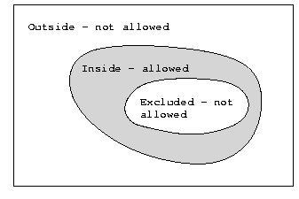

The Studera.NU carries focused information,
all of which is indexed manually by content providers.
The indexing information is embedded into web pages using meta tags,
and the service is built using a harvesting robot.
This article documents the functions of the search
engine Studera.NU, its robot, search software etc.
It aims at providing necessary background information both for staff
involved in system management and future developers.
A second aim is to give pinpoint areas for future developments
of the service.
The Studera.Nu service[1] aims at providing information on higher educations in Sweden structured in relation to subject and profession, and search-able by other relevant metadata. For students it should provide one-stop-shopping access distributed information produced by institutions of higher education in the country. The search engine is owned by the The Swedish Council for higher education.[2]
Hitherto, such information has been provided locally by universities and university colleges and published on the Internet through different means, but the same information has been made available with some variations in a central database. In practice, the costly and labour intensive cataloging of courses and educations have performed twice. The new system allows continuous update of the data at a lower maintenance cost.
The metadata set for describing both the educational intellectual content and what we call events[3] have been defined by the Council for Higher Education, with some input from NetLab.
The reason for using meta-tags, rather than some more fancy XML[4] or RDF[5] is that the necessary expertise to for implementing such export systems where not available among the content providers at the time.
An example metadata object is included in Appendix B, and the robot's interpretation of the same item in Appendix C.
The search engine used is Studera implements the Z39.50 information retrieval protocol[6] To be more specific, it is using the GILS[7] Z39.50 profile. Governmental Information Locator Service (GILS) was a of president Clinton's Information Highway, and meant to be an inter-operable method for search and retrieval of Governmental Information in general, but it has proved general enough for use in a wide range of applications. Lists of example services using . Software which supports are available on the GILS web site[8]. We have used it for years in the context of web indexing[9][10]
The search service is compliant with the rest of the worlds view on what such a service should do. Hence it is capable of delivering search results both in the Z39.50 internal GRS1 (Generic Record Syntax 1) and the record syntax used in library world, namely MARC[11] and with BIB-1 [12] search attributes. In principle, it is thus possible for anyone to cross search Studera.NU, together with other Z39.50 services, like Libris or Safari. The only factor that makes this impossible is that the server is situated behind a fire wall.
The two hierarchical vocabularies used are also accessed using Z39.50, using the Zthesaurus profile,[not:zthes} which is meant to give access to controlled vocabularies. Using this, it is possible for providers to incorporate vocabulary support in their services without themselves controlling or maintaining it.
In general we have used the semantics of the GILS profile for assigning tag paths and search attributes to the various metadata elements used. For some of them we were forced to use shoe horn. The metadata elements in question are:
The event field in the Studera.NU Element set has a value which is precoordinated string with the following formal syntax[13]
event ::=
eventid';'period';'coursetype';'intensity';
'location';'language';'time
eventid ::= (Letter | Digit)*
period ::= '20'[0-9, 0-9]'p'[1-5]
/* year divided into five parts*/
/* service breaks year 2100 */
coursetype ::= 'bunden'|'flexibel'
intensity ::= 'low'|'medium'|'high'|'full'|'flexibel'
location ::= [0-9]+|'flexibel'
/* a numeric location code or */
/* a flexible location */
language ::= 'en'|'sv'
time ::= (Letter | Digit | [,.#x20])*
Letter ::= [a-zA-Z]
Digit ::= [0-9]
The value is stored as GILS orderInformation. Although the eventid is the application id of the course, this is again not the semantics that would be expected from a governmental information source.
Queries in this field is done through regexp search. A default value matching all events is
period 20[0-9, 0-9]p[0-9]; coursetype (sommar|bunden|flexibel); intensity (low|medium|high|full|flexibel); location [0-9, 0-9, 0-9, 0-9]|flexibel; language (sv|en)
where the components above should be combined into a single string (to long for printing on an A4 sheet:
period;coursetype;intensity;location;language
The semicolons ';' are not used by the search engine.
The necessary data for querying the server for course information is:
| Host | afrodite.hsv.se |
|---|---|
| Port | 2100 |
| Databases | studera (for courses and programs) and webindex (for other information) |
As is mentioned below, there is another (not yet published) database available for information other than course and program. Both databases are on the same server The webindex database is configured exactly as the studera base, but with much fewer fields available for searching. See Ardö and Lundberg (1998) for further information on the setup of a similar server[10].
The Studera.NU is using the Zebra information server[14] for searching. There are three reasons for choosing Zebra: (i) It is an extremely fast and reliable full text searching engine, with powerful handling of tagged text. It also supports incremental update of index files, a feature necessary for databases where a large fraction of the records are replaced or updated more or less daily. (ii) We have good experience of using it in combo with the robot used. (iii) It supports Z39.50, which gives a lot of features for free.
Now, in the context of the Studera.NU service, the importance of points (i) and (ii) cannot be exaggerate, whereas point (iii) is of less importance. Indeed, the data-model used contains complications that are uncommon in bibliographic searching. The problems we have experienced are not really due to the access protocol per se, but to the fact that Zebra is a full text engine, and as such it has difficulties handling the events. This would have been easy in any relational database. These difficulties have been aggravated by the fact that there are features or bugs in the regexp search in Zebra making it difficult to formulate queries correctly.
The whole suit of software used is:
The Studera.NU uses the Combine Harvester.[17] More information on how to operate that software can be found in its User's Guide.[18] The text presented here is an adaptation of the current README [19] coming with the distribution. For detailed information on the internals of the Combine, please refer to the technical guide.[20] Beware, though, that some parts of the Tech Guide is obsolete.
The installation is already available. Upgrades can be obtained from the Combine web site, and will contain any information needed for installing the package and Makefiles for building the distribution.
The Studera.NU is using two harvester installations, one for metadata and course information, the data used in the current service, and another one for supplementary information which may be interesting for students (housing, financing, restaurants, whatever). The latter is currently not used in the public service.
The two installations live in:
afrodite.hsv.se:/usr/local/studera_combine/studieinfo afrodite.hsv.se:/usr/local/studera_combine/kringinfo
respectively
It is recommended to read at least the Overview section in the user guide [18] before continuing reading this document.
The scheduler holds a list of JCFs. A JCF is a URL combined with information about where to send the harvested page and whether this page has been harvested before and if so when, and when it was last modified etc. The scheduler also ensures that a single server is not queried more than once a minute, and that the same page is not fetched more than once a month. To load new URLs into the scheduler they must be converted into JCFs, this is done by bin/jcf-builder.pl. The scheduler uses two database-files db/recycle.db and db/guard.db.
The rrd holds the parsed robots.txt files from each server. The harvester program checks each URL against this database before fetching a page. Rrd uses one database file, db/rrd.db
.The RD just receives pages from the harvesters and stores them in the hrf/ directory, where they will be picked up by the parsers.
The IDBD manages a database that holds information for every URL in the harvester database. Since the files in the harvester database are stored according to the MD5 check sum, the IDBD also contains a mapping from URL to MD5. The IDBD is also a much faster way to for instance find all URLs in the harvest database, instead of having to traverse the entire file-hierarchy of the harvest database.
Please find below the commands needed for making various operations on the database. Below you will find the actual scripts where such commands are put together for running the Studera.NU harvesting service.
To take the new URLs found by the parsers and load them into the scheduler:
bin/new-url.pl | bin/jcf-builder.pl | bin/sd-load.pl
If you want to filter using selurl.pl:
bin/new-url.pl | bin/selurl.pl | bin/jcf-builder.pl | bin/sd-load.pl
Obviously, in the Studera.NU harvesting service these are run automatically using the cron daemon.
The CABIN and the HDB below are two classes of functions in the robot. The former refer to the operation of the harvesters, the handling of the robot rules, the harvesting policies etc and the latter the all the functions associated with the harvesting database.
CABIN and HDB also refers to the locations of these functions on the disk of your computer. In Studera.NU are functions are performed by a single machine, but in larger installations they may be distributed across several machines. In Studera.NU these two directories are the same.
There are two directories for databases: "CABIN/db" and "HDB/db". On Studera.NU they can be found in the same directory:
afrodite.hsv.se:/usr/local/studera_combine/studieinfo
The main setup file is etc/combine.conf. The current configuration can be obtained from the robot itself by running bin/echo-config.pl
There are also a few other config-files in etc config_parsable : the mime-types the parser can handle ( you normally shouldn't change this ) config_binext : the extensions that will make the harvester do a HEAD request to get the mime-type before it does a GET ( if the mime-type is in config_parsable ) Add or remove extensions here as you wish. config_allow & config_dissalow: These are control-files for the selurl.pl utility, which is a filter to select the URLs to feed into the scheduler. NOTE : the rules in this file are Perl regular expressions, so remember to escape characters like ".".
The root of the tree of the harvesting database is hdb This directory hierarchy contains all the harvested records, one in each file. The files are named after the MD5 check sum of the corresponding web-page.
The pages fetched by the harvester are sent to the RD daemon that simply puts them into the HRF files are put in hrf directory and will be taken by parsers.
In order to ensure search precision, we have to ensure that the Studera.Nu robot is indexing material about courses and educations, and only that. For that purpose, the robot should be able to identify relevant resources. In addition it should be easy for information providers to publish such materials. Both requirements are ensured by implementing the following rules:
The permissible URL range is defined by two lists of URL patterns, given as Perl regular expressions.[23] These two lists are[18]
Compare Fig. 1.
The simplest case is the matching of right truncation of URLs. Thus we can "allow" and "exclude" directories on the server www.hogskolan.se by
www.hogskolan.se/utbildningar/
This makes all web pages or scripts residing below utbildningar/ accessible for the robot. There might be a further directory:
www.hogskolan.se/utbildningar/internt_larare/
which may be excluded from harvesting by a "exclude"-rule. These rules may be used on any level, and may include individual file names or scripts. For example we may "allow" (or "exclude") all material from the script:
www.hogskolan.se/utbildningar.asp
if putting this in the appropriate list. If this script is allowed, then all URLs containing it will be allowed. For instance:
www.hogskolan.se/utbildningar.asp?nasty=rubbish
Would be harvested

Fig. 1. The total URL space,
with the permissible space as a sub-set. The set of excluded URLs is
a "hole" in the permissible URL space.
Studera.NU robot' URL space is not continuous, neither do there exist links to all material. As a consequence, content providers must supply Studera.NU with a single or a couple starting points from which all material is reachable by following links.
Typical setup is start at URL
http://www.hogskolan.se/utbildningar/index.html
and follow all links subject to the constraint that they should live within:
www.hogskolan.se/utbildningar/
Hardly any manual work, other than monitoring, is done in the service. As regards the harvesting database, it is currently built and maintaned using the following scheduled activities:
| Activity | Schedule (see crontab manual page for notation) |
|---|---|
| Reindex -- Incremental update of search engine index files. Done twice an hour, except during night. | 10,40 0-4,6-23 * * * |
| Total reindex -- All indexfiles are removed, and new fresh indices are created. Done early mornings. | 10 5 * * * |
| Reharvest -- Recirculate URLs found during the last half hour. Twice an hour. | 50,20 0-4,6-23 * * * |
| Big reload -- The robot revisits all pages every second day. | 10 0 * * 1,3,5 |
| Big retry -- Robot revisits all starting points and all URLs extracted during the last fortnight, that have not been included in the harvesting database. | 10 0 * * 0,2,4,6 |
The scripts performing the jobs are collected in the directory afrodite.hsv.se:/usr/local/studera_combine/studieinfo/cron/. The current ones are included in Appendix D.
http://citefm.hh.se/studeranu/robotstart.htm http://info.ki.se/education/ http://lukas.lu.se:8088/studeranuindex.htx http://mars.hhj.hj.se/kat/utbildningar.asp http://slukurs.slu.se/studeranu/index.asp http://ugglan.adm.luth.se/ http://utbdata.hkr.se/studeranu/robotstart.htm http://utbdb.sh.se/utbkat/Utbildningar.asp http://utbildning.mah.se/studeranu/robotstart.htm http://utbkat.gu.se/utbildning/amnesindex.html http://utbkat.gu.se/utbildning/kursindex.html http://www.bth.se/utb.nsf/sidor http://www.chalmers.se/HyperText/utbildningsbeskr.html http://www.chalmers.se/hypertext/utbildningsbeskr.html http://www.danshogskolan.se/ http://www.draminst.se/di/utb/ http://www.gammelkroppa.pp.se/ http://www.hb.se/studera/ http://www.hik.se/utbildning/kurser/lista.phtml http://www.hik.se/utbildning/program/lista.phtml http://www.his.se/his/utbildning/welcome.html http://www.ihs.se/utb_avd_juni/utbildning/utbildningindex.htm http://www.ihs.se/utb_avd_juni/utbildning/vautbrubriker.htm http://www.imh.se/utb_index.html http://www.info.umu.se/utbkat/ http://www.johannelund.nu/prog/ http://www.kau.se/grundutbildning/studerastart.lasso http://www.kkh.se/1pre/ http://www.kkh.se/2utb/ http://www.kmh.se/utbildning/program/ http://www.konstfack.se/studeranu/ http://www.kth.se/utbildning/program/ http://www.lhs.se/utbildning/ http://www.mdh.se/servlet/se.mdh.studieinformation.StuderaNu?termin=20012&termin=20021 http://www.oru.se/utb/katalog/ http://www.redcross.se/nursing/meny.htm http://www.smi.se/ http://www.sophiahemmet.ki.se/ http://www.teaterhogskolan.se/program/index.html http://www.ua.adm.gu.se/kurser/ http://www.utbildning.su.se/Katalog/ http://www.uu.se/utbildning/ http://www.vxu.se/utb/ http://www2.du.se/blg/utbildning/studeranu.asp http://www2.hgo.se/kurskatalogen.nsf/sok http://www2.hj.se/hlk/studera/lista.asp http://www2.hj.se/hlk/studera/lista.asp http://www2.hj.se/ing/studera/lista.asp http://www2.ihh.hj.se/utbildn/lista.asp http://www.orebromissionsskola.com/sidor/studera/
www.liu.se\/utbildning\/kursdata\/ info.ki.se\/education\/ mars.hhj.hj.se\/kat slukurs.slu.se utbildning.mah.se\/studeranu www.mah.se\/utbildning.html www.chalmers.se\/[Hh]yper[Tt]ext\/[Uu]tbildningsbeskr www.danshogskolan.se www.draminst.se\/di\/utb\/ www.draminst.se\/di\/framendx.htm www.du.se\/utb-databas www2.du.se\/utbildning\/ www2.du.se\/blg\/utbildning\/ www.gammelkroppa.pp.se www.hb.se\/studera www.hhs.se\/studeranu www.hh.se\/utbildning utbdata.hkr.se\/studeranu citefm.hh.se\/studeranu\/ overlord.hig.se\/Webkat\/ hik.se\/utbild www.his.se\/his\/utbildning\/ www2.adm.htu.se\/utbildningar\/ www.bth.se\/utb\/kurser[vh]t\d\d\d\d.nsf\/webb\/ www.bth.se\/utb.nsf\/sidor www.imh.se www.info.umu.se\/utbkat www.johannelund.nu\/prog www.kkh.se\/2utb www.kkh.se\/1pre www.konstfack.se\/studeranu www.kth.se\/utbildning\/program www.kau.se\/grundutbildning\/ www.lhs.se\/utbildning lukas.lu.se:8088\/ www.mdh.se\/servlet\/se\.mdh\.studieinformation\.StuderaNu www.mdh.se\/servlet\/VisaTillfalle www.mdh.se\/utbildning www.mh.se\/utbildning\/utbkat\/robotstart www.mh.se\/utbildning\/UtbKat\/Kurs.asp www.mh.se\/utbildning\/UtbKat\/Program.asp www.orebromissionsskola.com\/sidor\/studera www.oru.se\/utb\/katalog\/ www.orebromissionsskola.com\/sidor\/studera www.redcross.se\/nursing utbdb.sh.se\/utbkat www.ihs.se\/utb_avd_juni\/utbildning www.smi.se www.sophiahemmet.ki.se www.ths.se\/ www.utbildning.su.se\/[Kk]atalog www.uu.se\/[Uu]tbildning utbdatabas.uu.se\/katalog www2.ihh.hj.se\/utbildn\/ www2.hj.se\/ing\/studera\/ www2.hj.se\/hlk\/studera\/ www2.hgo.se\/kurskatalogen.nsf\/sok www2.hgo.se\/kurskatalogen.nsf\/6916574c202e4267c125669e00539fbe ugglan.adm.luth.se www.ua.adm.gu.se\/kurser utbkat.gu.se\/utbildning www.vxu.se\/utb www.esh.sssd.se\/utbildning www.teaterhogskolan.se\/program www.kmh.se\/utbildning\/program
OpenView CollapseView SearchView ExpandView ExpandSection www2.du.se[^&]*&language= mode=skrivare utbdb.sh.se\/utbkat\/Kurs.asp slukurs.slu.se\/Kurs.asp?Anmkod slukurs.slu.se\/Kurs.asp[^&]&200\d-\d\d-\d\d info.ki.se\/education\/curricula info.ki.se\/education\/researchtraining info.ki.se\/education\/studentservices
<meta name="DC.Identifier"
scheme="URL"
content="http://www.mh.se/utbildning/UtbKat/Kurs.asp?kurskod=MAAA45"/>
<meta name="DC.Title"
content="MATEMATIK A, 5 p, Geometri och statistik" />
<meta name="DC.Subject"
scheme="STUDERA"
content="400.600" />
<meta name="DC.Publisher"
scheme="STUDERA"
content="mh" />
<meta name="STUDERA.identifier"
content="mh-MAAA45" />
<meta name="STUDERA.type"
content="Grundkurs" />
<meta name="STUDERA.prerequisites"
content="standard" />
<meta name="STUDERA.event"
content="mh-70211;2001p4;flexibel;full;2280;sv;dag;" />
<meta name="STUDERA.event"
content="mh-70204;2002p1;bunden;full;2280;sv;dag;" />
<meta name="STUDERA.event"
content="mh-70206;2002p1;flexibel;full;2280;sv;dag;" />
<wir>
<robot>
JCF/0.0 URL="http://www.mh.se/utbildning/UtbKat/Kurs.asp?kurskod=MAAA45" ..
</robot>
<rec-id>5250DD58EDC102D82D8322E37B83F9E9</rec-id>
<orig-rec-id>mh-MAAA45</orig-rec-id>
<rec-checked>Sun, 23 Sep 2001 22:13:23 GMT</rec-checked>
<controlled-terms>
<cterm>400.600</cterm>
</controlled-terms>
<availability>
<available>
<linkage>
http://www.mh.se/utbildning/UtbKat/Kurs.asp?kurskod=MAAA45</linkage>
<format>text/html; Charset=ISO-8859-1</format>
</available>
<publisher>mh</publisher>
<schedule>
<event>mh-70211;2001p4;flexibel;full;2280;sv;dag</event>
<event>mh-70204;2002p1;bunden;full;2280;sv;dag</event>
<event>mh-70206;2002p1;flexibel;full;2280;sv;dag</event>
</schedule>
<medium>Grundkurs</medium>
</availability>
<title>MATEMATIK A, 5 p, Geometri och statistik</title>
<access>
<constraint>standard</constraint>
</access>
<inf>
<nh>2</nh>
<nl>10</nl>
</inf>
<relation>
<phrase>Mitthögskolan</phrase>
<uri>http://www.mh.se/</uri>
<type>anchor</type>
</relation>
<relation>
<phrase>Mitthögskolan</phrase>
<uri>http://www.mh.se/utbildning/UtbKat/distans.asp</uri>
<type>anchor</type>
</relation>
<relation>
<phrase>Förklaring finns här.</phrase>
<uri>
http://www.mh.se/utbildning/anmalningsguide/standardbehorighet.asp#G.4
</uri>
<type>anchor</type>
</relation>
<relation>
<phrase> Urvalsregler </phrase>
<uri>
http://www.mh.se/utbildning/anmalningsguide/urval_kurser.asp
</uri>
<type>anchor</type>
</relation>
<relation>
<phrase>www.tnv.mh.se/mfs</phrase>
<uri>http://www.tnv.mh.se/mfs</uri>
<type>anchor</type>
</relation>
<relation>
<phrase>MATEMATIK</phrase>
<uri>
http://www.mh.se/utbildning/UtbKat/Amne.asp?amne=MATEMATIK
</uri>
<type>anchor</type>
</relation>
<relation>
<phrase>Proffe Eva</phrase>
<uri>
http://www.mh.se/utbildning/UtbKat/Kontaktpers.asp?KontaktID=719
</uri>
<type>anchor</type>
</relation>
<relation>
<phrase>Utbildningar 2001/2002</phrase>
<uri>http://www.mh.se/utbildning/Utbkat/Utbildningar.asp</uri>
<type>anchor</type>
</relation>
<relation>
<phrase>Mitthögskolan</phrase>
<uri>http://www.mh.se/</uri>
<type>anchor</type>
</relation>
<relation>
<phrase>anna.ossung@mh.se</phrase>
<uri>mailto:anna.ossung@mh.se</uri>
<type>anchor</type>
</relation>
<sample>
<heading>Utbildningar 2001/2002</heading>
<heading>MATEMATIK A, 5 p, Geometri och statistik</heading>
<text>
Mitthögskolan Om utbildningswebben Innehåll Program och kurser Nya
kurser,Ändringar Distansutbildning Sommarkurser Kväll- och
Deltidskurser Utlandsstudier Studievägledning Funktionshinder
Högskoleprov Antagning Examen Ladok Institutioner Sök utbildningar
Kursen vänder sig till lärare eller blivande lärare, som vill
lära sig mer om geometri och statistik. I geometridelen av kursen
ingår plangeometri, rymdgeometri och Icke-Euklidisk geometri, i
statistikdelen ingår både statistik och sannolikhetslära. Kursen har
en tydlig didaktisk inriktning med många övningar och laborationer. I
båda momenten ingår datorövningar. Sammankomster för distanskurs:
Tillgång till dator med Internetanslutning krävs. Förkunskaper:
Standardbehörighet G.4 ( Förklaring finns här. ) Urvalsregler Övrigt
Tidigare högskolestudier krävs inte. Utbildningsnivå: 1 - 20
poäng. Mer information Om kursen: www.tnv.mh.se/mfs Om MATEMATIK
Kontakta: Proffe Eva Anm kod Termin Kurstid Kursort Studiesätt 70211
ht 01 45-49 Härnösand Heltid på dagtid, distans. 70206 vt 02 4-8
Härnösand Heltid på dagtid, distans. 70204 vt 02 8-12 Härnösand
Heltid på dagtid. Utbildningar 2001/2002 Mitthögskolan
Ansvarig: anna.ossung@mh.se
</text>
</sample>
[... some internal robot rubbish deleted ...]
<server>Microsoft-IIS/5.0</server>
</wir>
#! /usr/local/bin/bash PATH=.:/bin:/usr/bin:/usr/local/bin export PATH; cd /usr/local/studera_combine/studieinfo bin/export-netto.pl bin/sd-ctrl.pl pause bin/selurl.pl hrs/idb.hrs | bin/jcf-builder.pl | bin/sd-load-force.pl bin/sd-ctrl.pl open cd /usr/local/studera_combine/studieinfo/log clean.pl
#! /usr/local/bin/bash PATH=.:/bin:/usr/bin:/usr/local/bin export PATH; cd /usr/local/studera_combine/studieinfo bin/export-netto.pl bin/sd-ctrl.pl pause cat log/url.* | sort -u | bin/selurl.pl | bin/url2jcf.pl | bin/sd-load-force.pl bin/sd-ctrl.pl open cd /usr/local/studera_combine/studieinfo/log clean.pl
#! /usr/local/bin/bash PATH=.:/bin:/usr/bin:/usr/local/bin export PATH; cd /usr/local/studera_combine/studieinfo bin/idb2hrs.pl bin/sd-ctrl.pl pause bin/new-url.pl | bin/selurl.pl | bin/url2jcf.pl | bin/sd-load.pl bin/sd-ctrl.pl open
#! /usr/local/bin/bash PATH=/bin:/usr/local/bin:/usr/bin export PATH; cd /usr/local/studera/zebra run_zebraidx &
#! /usr/local/bin/bash PATH=/bin:/usr/local/bin:/usr/bin export PATH; cd /usr/local/studera/zebra rm DB/* run_zebraidx &
| 1 | Studera.Nu <http://www.studera.nu/> |
| 2 | The Swedish Council for higher education <http://www.hsv.se/> |
| 3 | Studera.Nu Metadata Element Set <http://studera.hsv.se/internt/felt.htm> |
| 4 | Extensible Markup Language <http://www.w3.org/TR/1998/REC-xml-19980210> |
| 5 | Resource Description Framework (RDF) Model and Syntax Specification <http://www.w3.org/TR/PR-rdf-syntax/> |
| 6 | Z39.50 maintenance agency home page <http://lcweb.loc.gov/z3950/agency/> |
| 7 | Application profile for the government information locator service (GILS) <http://www.gils.net/prof_v2.html> |
| 8 | not:gils software |
| 9 | Anders Ardö, Allan Arvidsson, Sebastian Hammer, Kenneth Holmlund and Sigfrid Lundberg, 1998. NWI II, An Enhanced Nordic Web index: Final report <http://www.nordinfo.helsinki.fi/publications/nordnytt/nnytt3-4_98/nwi_final_report.htm> |
| 10 | A. Ardö and S. Lundberg, 1998. A regional distributed WWW search and indexing service -- the DEISRE way. Computer Networks and ISDN systems 30:173-183 <http://decweb.ethz.ch/WWW7/1900/com1900.htm> |
| 11 | Information and documentation -- Information retrieval (Z39.50) -- Application service definition and protocol specification <http://www.iso.ch/iso/en/CatalogueDetailPage.CatalogueDetail?CSNUMBER=27446> |
| 12 | ATTRIBUTE SET BIB-1 (Z39.50-1995): SEMANTICS <ftp://ftp.loc.gov/pub/z3950/defs/bib1.txt> |
| 13 | A simple Extended Backus-Naur Form (EBNF) notation <http://www.w3.org/TR/1998/REC-xml-19980210#sec-notation> |
| 14 | Indexdata, The Zebra information server. <http://www.indexdata.dk/zebra/> |
| 15 | Zebra Server - Administrators's Guide and Reference <http://www.indexdata.dk/zebra/zebra.php> |
| 16 | not:ZAP |
| 17 | The Combine Harvesting Robot <http://www.lub.lu.se/combine/> |
| 18 | Combine User's Guide <http://www.lub.lu.se/combine/docs/uguide.html> |
| 19 | The Combine README <http://www.lub.lu.se/combine/dist/README-v1.1.txt> |
| 20 | Yong, Tsao: Combine: A Distributed Open System Architecture for WWW Resource Harvesting and Indexing System <http://www.lub.lu.se/combine/docs/uguide.html> |
| 21 | A Standard for Robot Exclusion. <http://www.robotstxt.org/wc/norobots.html> |
| 22 | The Noble Art of Being Indexed or the Webmaster's Guide to Harvesting Robots <http://nwi.lub.lu.se/web_masters_guide.html> |
| 23 | perlre - Perl regular expressions <http://www.perl.com/pub/doc/manual/html/pod/perlre.html> |
$Log$ Revision 1.1 2009/06/29 11:12:22 sigfrid Initial revision Revision 1.4 2001/09/25 18:30:39 siglun Added most information needed for understanding the Z39.50 server. Revision 1.3 2001/09/25 12:46:23 siglun Included long section on maintaining the robot. Revision 1.2 2001/06/14 10:33:05 siglun Preliminary plan of the report ready Revision 1.1 2001/06/13 07:08:56 siglun Initial revision